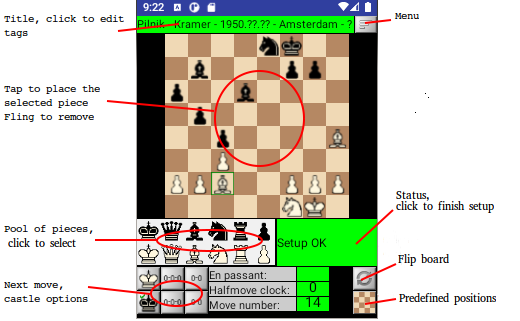

The most advanced graphical PGN editor. Allows user to load, browse, modify, delete PGN files, possibly inside zip files.
Supports nested variants, comments, glyphs.
Here are the details about PGN
and FEN.
Menu command Analysis activates Stockfish 11 and ChessPad shows its results as hints.
ChessPad creates a sample file /sdcard/ChessPad/sample.pgn so the user can get an idea of ChessPad features.
Note: all modifications to this file will be lost after ChessPad is restarted. To preserve your changes save the game in another file.
Main Screen.
To make a move first click on the piece on the board (the square will be highlighted with green frame) and then click on the square where you want to move to.
ChessPad does not allow illegal moves.
Buttons To next variation and To end / To next game / Faster animation invoke animation, showing position after each move.
Button Pause animation stops animation at the current position.
Button To start / To previous game / Slower animation, depending on the game status:
- Moves to the 1st move, when in the middle of the game;
- Opens the previous game, if possible, when already at the beginning of the game;
- Slows down animation, when in animation mode.
Button To end / To next game / Faster animation, depending on the game status:
- Moves to the last move in the current moveline, when in the middle of the game;
- Opens the next game, if possible, when already at the last move;
- Speeds up animation, when in animation mode.
Every pgn file can contain a number of games.
There are two ways to open them, with Load or Puzzles menu commands:
| Load |
Puzzles |
| Select individual game to open |
Select the whole pgn file to open a random puzzle |
| To start button works as described above |
To start button is disabled |
| Board position preserved |
Board is flipped depending on the move turn |
| To end button works as described above |
To end button opens next random puzzle in any pozition |
| Updated game can be optionally saved |
Unless the puzzle is appended to another PGN file, all changes will be lost. |
In Puzzles mode any attempt to move the position forward or go to another puzzle prematurely
is considered as failure.
There are a number of large chess puzzle collections on the Web, e.g.
mate in 2
contains more than 155,000 puzzles or
more than 1000 compiled puzzles.
When appending game to a PGN file the path format is:
…/dir1/dir2/save.pgn
or
…/dir1/zipped_pgn.zip/dir2/save1.pgn
Note:
- zip file is considered as a special type of directory;
- zip files cannot be nested;
- zip file can contain multiple PGN files with directories;
- ChessPad creates directories and zip files automatically, but to rename/copy/move/delete files and directories you will need one of File Managers
available on Google Play.
By tapping the title line, you get to the screen where you can modify PGN tags.
All tag values can be changed and the tags not included in STR can even be deleted. You can also add new tags using the last line:
Using the menu command Setup, you can switch to Setup screen. The position and tags will be copied from Game screen:

To place a piece on the board, tap on it in the pool set, then tap on the board where you want to place it as many times as you want.
Fling a piece to remove it from the board.
Setup can be finished and ChessPad returns to Game screen only if the position does not have errors, such as no King, more than one King, etc.
To abandon Setup and return to Game screen use Menu Cancel Setup. The position will be lost in this case.
Merging variations.
ChessPad automatically merges variations when they lead to the same position. For example:
1.e4 e5 2.Nf3 {main} (2.Bc4 {v1} Nc6 {v1} 3.Nf3 {v1} Nf6 {v1} $4 4.c3{v1} $7) 2. ... Nc6 {main} 3.Bc4{main} Nf6{main} $5 4.c3{main}
Note that positions after 3.Nf3 {v1} and 3.Bc4{main} are the same. As a result ChessPad changes the pgn above to:
1. e4 e5 2. Nf3 {main} (2. Bc4 {v1} Nc6 {v1} 3. Nf3 {v1} ) 2. ... Nc6 {main} 3. Bc4 {main} Nf6 $5 {main; v1} 4. c3 $7 {main; v1}
Some important implications:
- If 4. c3 is deleted, it disappears from both main line and variation.
- If 3. Bc4 {main} move is deleted, its following moves are not deleted, but instead moved to another variation, resulting:
1. e4 e5 2. Nf3 {main} (2. Bc4 {v1} Nc6 {v1} 3. Nf3 {v1} Nf6 $5 {main; v1} 4. c3 $7 {main; v1} ) 2. ... Nc6 {main}
Merging games.
You can merge multiple pgn files into one thus creating an opening database. Navigate to the position from which you want to see the available variants,
e. g. the position that you see after:
1. e4 e6 2. d4 d5 3. e5
Click on Menu → Merge command. You will see the following dialog:
Select a valid pgn file and click OK button. ChessPad will search the specified file and if it finds a game with the same position,
it will either add it as a new variant or continue the existing move line until it finds the fork. Pgn file can be inside a zip file.
Additional options:
Annotate – when it is checked, ChessPad will include the game results to the merged variant as comment.
Max plys - include a matching game only until the specified number of ply moves.
Start and End – pgn files can be quite large, include tens of thousands games like the files on this
Web site.
Merging these files can take very long time and Android can even abort ChessPad while it is working on such file.
If this is the case, specify starting and ending game number to make each session short.
After the merge is done, you can continue merging the same or another pgn file.
If omitted, start and end mean the beginning and the end of pgn file accordingly.
Even with short sessions the resulting file can be quite large and when loaded, switching from ChessPad to another app and back can take rather long time.
For example, on Samsung S9, ChessPad loads SicilianTaimanovMain-merged.pgn (created from
Sicilian, Taimanov, Main Line).
by merging games after "1.e4 c5") in about 1 min.
ChessPad takes the same time to preserve its status, when user activates another application.
Considering that the merged file contains more than 1.7M positions and the status needs to be updated only when the file is changed, this is probably acceptable.
Working with DGT eBoard.
This option has been tested with an older serial port DGT eBoard and StarTech serial adapter ICUSBANDR232, on Samsung Alpha (V5.0, API 21),
Amazon Kindle 5 (API 22) and Samsung S9 (V8.0, API 26, V9.0, API 27). It is recommended to connect the adapter and the board first,
power on both, then connect the phone. When the adapter is attached to the phone for the first time, the user sees the message:
Click on “Always open ...” and OK. Now when ChessPad is running and the board is attached, the user will see the additional menu option:
Start Dgt Board Mode
If the board (adapter) gets disconnected, ChessPad automatically switches off DGT mode. But when the board gets reconnected,
it does not go to DGT mode. The user has to activate it via menu.
This is done because when the board is off, the position can change.
When activated, ChessPad records the board positions and moves.
ChessPad has two DGT modes, Setup/Mess and Game. Initially it is in Setup/Mess mode, where the players can set up any position
and ChessPad just shows it on its screen, such as:
In this mode the screen is quite similar to the regular Setup mode except for the pieces are set not on the screen, but on the chess board.
Note: squares a1 and h8 on DGT eBoard are physically different, so, unless the players setup the initial position
(that is recognized automatically), the user must use Flip eBoard button
(which is different from Flip Board View button that only flips the view) to specify the inverted chess board.
ChessPad switches from Setup/Mess to Game mode when:
- ChessPad recognizes the initial position. This starts a new game.
- User clicks on Setup OK status message when it does not display an error. This also starts a new game.
- ChessPad finds an existing position in the last game. Then the existing game is being continued.
- ChessPad finds that the position on the board can be reached with a single legal move. The move gets recorded, the existing game is being continued.
The last two situations can occur when players mess up the pieces and either restore the last position or set the new position
that is created after the move during which the mess up happened.
In Game mode the screen looks like:
In this mode the current move can be annotated the usual way.
In case a move (or moves) was withdrawn, the new move (if different) starts a new variation in the game.
This can happen in a casual game or during chess study.
ChessPad does not make any judgments, it just records the positions and the legal moves.
When in DGT Board mode, ChessPad records the games until the user stops it explicitly.
Then it writes a new pgn file with all recorded games.
It increments Round tag and alternates White/Black tags automatically for every game.
The recorded games can be found on Android in ChessPad folder as rec-YYYY-MM-DD_hh-mm-ss.pgn files.
Some issues with DGT Board were observed:
- The connection is not recognized. Disconnect USB adapter from the phone and reconnect it. This is especially true with the older Android V5.0.
- ChessPad screen does not show the current position on the board. We saw it only in Setup/Mess mode. Take off a piece and put it back.
ChessPad is free with no ads. Enjoy!
All problems can be reported to
Alexander Bootman.